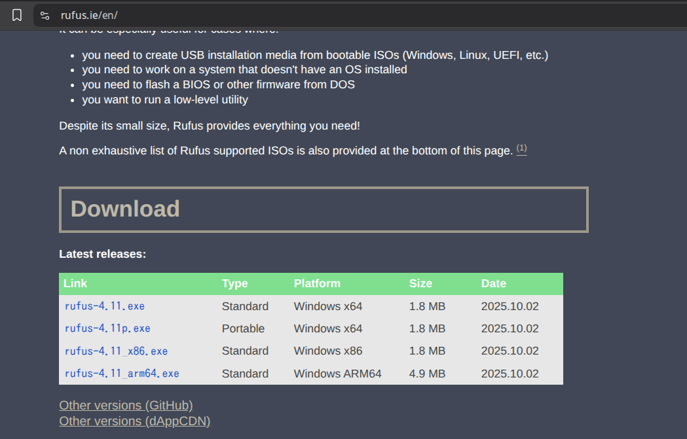

Tutorial Instalasi Windows 10 dengan Rufus
Petunjuk langkah-demi-langkah untuk menginstal Windows 10 menggunakan Rufus, sebuah alat gratis untuk membuat USB bootable.
1. Persiapan
Sebelum Anda memulai, pastikan Anda memiliki semua komponen yang diperlukan:
- Komputer dengan Windows, macOS, atau Linux
- USB flash drive dengan kapasitas minimal 8GB
- File ISO Windows 10 resmi dari Microsoft
- Aplikasi Rufus terbaru
- Kunci produk Windows 10 (jika Anda memiliki lisensi)

2. Download Rufus
Rufus adalah alat gratis dan open-source yang digunakan untuk membuat USB bootable. Anda dapat mendownloadnya dari situs resmi:
Setelah download, ekstrak dan jalankan file aplikasinya. Tidak perlu menginstal.
{kind=link}
3. Download ISO Windows 10
Anda perlu file ISO Windows 10 resmi dari Microsoft. Kunjungi situs Microsoft dan download file ISO Windows 10.

4. Membuat USB Bootable
Ikuti langkah-langkah berikut untuk membuat USB bootable dengan Rufus:
- Sisipkan USB flash drive ke komputer
- Jalankan aplikasi Rufus
- Pilih USB drive Anda dari daftar perangkat
- Klik ikon folder di sebelah "Pilih" untuk memilih file ISO Windows 10 Anda
- Pastikan pengaturan berikut dipilih:
- Sistem File: NTFS
- Tipe Partisi: GPT (jika Anda menggunakan UEFI)
- Skema Target Sistem: UEFI (non-CSM)
- Klik "Mulai" dan tunggu proses selesai
{kind=link}
5. Pengaturan BIOS
Sebelum menginstal Windows 10, Anda harus mengatur BIOS/UEFI komputer Anda untuk boot dari USB:
- Restart komputer dan masuk ke BIOS/UEFI (biasanya dengan menekan F2, F12, DEL, atau ESC saat startup)
- Cari pengaturan "Boot" atau "Pengaturan Boot"
- Atur USB drive sebagai prioritas boot pertama
- Simpan perubahan dan restart komputer

6. Instalasi Windows 10
Setelah komputer boot dari USB, ikuti langkah-langkah instalasi:
- Pilih bahasa, waktu, dan format keyboard Anda
- Klik "Instal Sekarang"
- Masukkan kunci produk jika diminta (lewati jika Anda akan memasukkannya nanti)
- Setujui persyaratan lisensi
- Pilih "Instal Windows" bukan upgrade
- Pilih drive tempat Anda ingin menginstal Windows (hati-hati memilih drive)
- Tunggu proses instalasi selesai

7. Konfigurasi Awal
Setelah instalasi selesai, Anda akan melalui proses konfigurasi awal:
- Pilih pengaturan wilayah Anda
- Masukkan nama pengguna dan password
- Atur keamanan pengenal (opsional)
- Pilih pengaturan privasi
- Tunggu Windows menyiapkan desktop Anda

8. Kesimpulan
Selamat! Anda telah berhasil menginstal Windows 10 menggunakan Rufus. Sekarang Anda dapat mulai menggunakan sistem operasi baru Anda.
Jika Anda menemui masalah selama proses instalasi, periksa kembali:
- Kompatibilitas hardware dengan Windows 10
- File ISO yang diunduh tidak rusak
- USB flash drive berfungsi dengan baik
- Memori RAM cukup untuk proses instalasi
Selesai!
Anda telah menyelesaikan tutorial instalasi Windows 10 dengan Rufus. Jika tutorial ini membantu, silakan bagikan kepada orang lain yang mungkin membutuhkan!